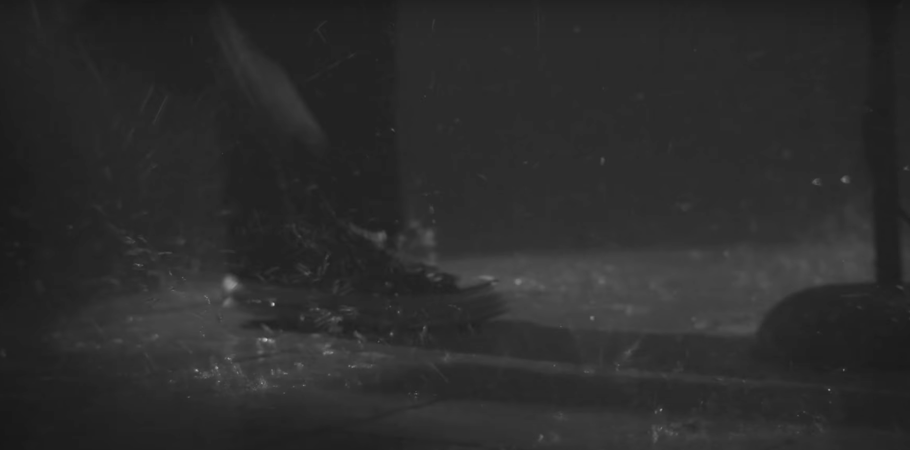
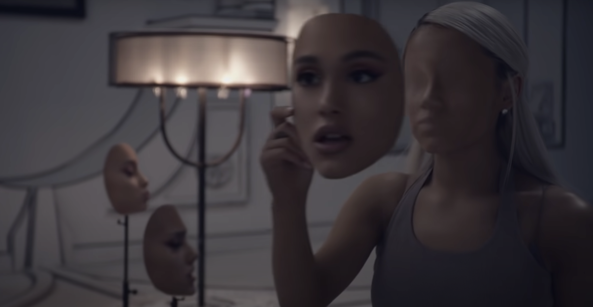

Gender roles, specifically those that adhere to men and their emotional expressionism, are rather toxic, hence the term toxic masculinity. The stigmatization of men releasing any emotion other than anger or aggression seem to have become a rather strong norm in society today. This idea justifies the pattern that males have when it comes to relationships, whether it be romantic or strictly platonic, they have difficulty conveying those intense feelings of admiration and love. The influx of male music artists could have a correlation to this phenomenon, as a positive outlet to release the thoughts and feelings that have been held in for far too long. I have found that music videos seem to to take those inner most feelings to the next level through the use of props and additional visual aspects.
I am very open with my religion and relationship with God, it is a huge part of who I am. My entire life I have been primarily exposed to Christian and Worship music, which indeed is very emotional from the perspective of a Christian because it is how we praise God.
Me and my mom at a Christian concert over the summer.
My brother and I serving on the production team at Grace Collective Church.
Being well acquainted with the passion, love, heartbreak, and overwhelming feelings that these male artists convey so freely in their music allows me to clearly see a distinction between other popular male artists in the 21st century eluding those same emotions but just towards another person or situation. I have been drawn to three, very beautiful songs and their corresponding music videos to really dissect the depth and varying levels of emotion the men are addressing.
Anyways by Benjamin William Hastings
The Purest of Emotions
The song “Anyway” by Benjamin Hastings was released in 2020 as a single, now a part of the newly released album “Benjamin William Hastings” as of November 4, 2022. As I have mentioned, worship music has a goal to praise the Lord. It revels on the fact that Jesus died for our sins to save those from the wrath of the Devil and bring them an eternity of life in Heaven. This forges a deeper connection with God and a way for us to draw closer to him despite our imperfections, mistakes, and the sinful nature of Earth. It reassures us of His love for us and that we are still worthy of His gifts although we have not lived a pure life and often lean toward earthly beings to fulfill us. Benjamin Hastings displays raw and compassionate emotions throughout the video in the form of bodily movement. We see him stomping his feet and swinging his hair from 1 minute 55 seconds into the video until practically the end.
For me, I interpret this as the energy the Lord is giving him. The purest and most wholesome love I have ever experienced is the love of God, and it has made me feel so incredibly full of life that I just have to share and rejoice that feeling with the world. Sometimes the only way to do that is to get up, move your body, to scream and shout at the top of your lungs, as seen through Benjamins actions. Additionally, the aspect of the falling rain makes me think of those sappy romance comedies where the two main characters are dancing in the pouring rain, declaring their love for one another, like in the oh so famous The Notebook scene. Benjamin may be serenading Jesus in the pouring rain as a representation of the overflowing love a life with God can feel like. This could also be seen through a more negative light. Benjamin could be feeling that remorse and regret of past decisions where he feels unworthy of God’s love, a common emotion of those with a strong relationship with Christ, that it ignites an anger within him. The aggressive motion and hair swinging could be a release of that sorrow and intense, self-deprocating, feeling of worthlessness. The technique in the video pans to a close up shot of Benjamins feet just as he begins to stomp

This series of motions occurrs in conjunction with the more intense beats in the song. This focuses the viewers attention on that rapid, soul jerking movement.
The Reality: Harmful Coping Mechanisms
The world of fame is not an easy one, the judgement and criticism that comes with a public display of many aspects of ones life is, to say the very least, intense and requires extreme vulnerability. The one and only musical sensation Harry Styles, recently turned actor, with films The Policeman and Don’t Worry Darling, has compiled a lengthy list of struggles which he has endured since being initiated into the public eye in 2010 through his The X Factor UK audition. Since then, the media has captured plentiful breakups, including a short quarter year relationship with Taylor Swift, the iconic music couple of the twenty-first century. Both artists seemed to have used the energy from that low time in their lives to release sincere and heartfelt music about the other and the situation in general. We have Harry to thank for many of the songs included on Taylors 1989 album. Harry has also caused many controversies, most prominently, the cover of Vogue which he was featured on wearing a dress and typical feminine articles of clothing. Soon after, he received many questions on his sexuality, to which he responded by addressing the idea of labeling as outdated and unnecessary, opening a door for a specific group of people to shine hate and bitterness toward him. With everything he has been through, and the vulnerability he continues to display, the pure openness he has shown the world through music is very endearing and shown through many of his pieces as he suffered the backlash from the world.
Falling by Harry Styles
In one of my personal favorite songs that Styles has released is Falling, an extremely emotionally attaching work of art. He addressed the meaning behind the song in an interview with RADIO.com to represent a low time in life where one can sense themselves falling back into dark times of past habits. He explains it as recognising that you have lost something and the blame falls on yourself, leading to the entrapment of the rabbithole (Wright). The music video itself takes place in a solitary room, with Styles against the wall on the floor, and a water filled piano in the center.
Harry Styles leaning against a wall in indescribable agony and sorrow
Atop of this drenched piano is a singular glass of liquor, corresponding to the lyrics, “but there is no one to blame but this drink in my wandering hands”.
Styles in possesion of a glass of alcohol
Styles directly addresses the coping mechanism of drinking, although he is in no noticeable degree of intoxication. According to the Center for Disease Control, men have reportedly consumed more alcohol than women in the past 30 days, fifty-eight percent compared to fourty-nine percent, respectively. Additionally, twenty-one percent of men have binge drank as opposed to thirteen percent of women. These numbers are a more solid representation of what I am conveying in this paper, the concept that men turn to more harmful tactics when society establishes the need for men to suppress all emotion.
Styles succeeds in connecting with the viewer once again. His eyes penetrated deeply into my soul and ignited the soft spot in my heart to open the flood gates as I burst into a silent weep the first time I watched Falling. The intense stare, acknowledging the camera, with the glassy eyes and pain painted on his face, an absolute assault to my emotions.
The camera continuously focused on his face, very up close and personal, then panning out to his full body as he moved from the ground to the seat at the piano. The depth of feeling provided by the overflowing piano, which throughout the video, is the source of a flood, rising up and completely encapsulating Styles to the point of him drowning.
The room Harry Styles is in could be related to fish and a fishbowl. Fish are in their natural habitat when they are immersed in water, it is key for their survival because they cannot breathe in air and oxygen. Humans often times get comfortable with certain aspects of their life, for example depression and anxiety, because it is easier to accept the problem and let it consume your life than to actually make a change and put a gameplan for betterment into motion. Styles was doing nothing to escape the water, he continued to sing and play the piano. From the psychologically analytical side of me, I would say that he was not going to try and fight the pain anymore, the loneliness, regret, or numbness is too powerful to work against. Another thought is that he may have found peace knowing that he is at rock bottom, drowning, the worst is behind him, his situation can only get better from here.
RADIO.com Interview with Harry Styles
Mysterious Factor
Uptown Funk, Just The Way You Are, and Thats What I Like are titles that bring you back to a more simple time in your life, a time before life instilled stress and insurmountable pressure. These early 2000’s hits are creations of Peter Gene Hernandez, the pop songer-songwriter from Honolulu, Hawaii. Oh wait, you probably know him as Bruno Mars. Mars got his nickname from his first few years of life, his sister describing him as string-willed and brute. The name Bruno just fit so well and is now associated with the legacy the thirty-seven year old will leave behind. The talent he possesses seems to be hereditary, his entire family partakes and contributes to the music industry in some way, and Mars has been picking up instruments and microphones practically from birth. In 2013, Mars released a song, this song strays away from his typical pop-rock genre of oversexualized encounters, leaving its own mark on his career. When I Was Your Man is a slow song, full of romance and love, resulting in a happy yet bitter ending. He tells MTV that this song is inspired by his one that got away, reflecting all the little things he did during their relationship. He looks back on this women with fondness because he loved her so deeply and gave her his all. It is a bittersweet melody that can bring out all the emotions in someone, and opening others eyes to how they should be treated by others, that the little details are details for a reason, only that one person will care enough to remember them.
When I Was Your Man by Bruno Mars
As in Harry Styles Falling music video, Bruno Mars music video for When I Was Your Man also incorporates the solo glass of alcohol on the piano. Although, it was not made as prominent of an object, but perhaps a vague correlation to the effects of alcohol, after all drunk words are sober thoughts. The song brings Brunos inner most thoughts to life, which on a very surface level, can be interpreted as him regretting the way he has treated a past relationship and seeing what it could have ended up as if he put forth more effort. He is looking in the past and allowing it to affect his future, with a very somber and sorrowful attitude. Commenters on the music video feel the passion of the song and really express a strong relation to what is being conveyed.
An interesting aspect of the video which caught my attention is the use of sunglasses in the video. Mars is seen wearing sunglasses the entire duration of the video, leaving me in a curious state of mind. Is the covering of his eyes purposeful? Is he simply making a fashion statement? I doubt that I will ever discover a true answer, nonetheless, the wheels in my mind never fail to spin 24/7. I grew up receiving endless compliments about how vibrant and insanely encapsulating my bright blue eyes are. People would be astounded by them and tell me that my eyes are the window to their soul. A great part of me believes that Mars is intentionally blocking his eyes, preventing the viewer from seeing his true emotion that lies in his eyes.
Bruno Mars is seen with sunglasses on and a glass of an alcoholic substance acompanying him
He is partially conforming to the societal standard if he does not want his genuine emotion to be revealed due to a fear of judgement or degrading by his peers. Maybe his motive is internal, he may be uncomfortable with emotion due to a lack of experience and discussion on expression. This tends to be the case with men who have rarely indulged in healthy forms of sharing their feelings. The Center for Disease Control reported that a minimal seven percent of men had even just attended one therapy session as opposed to women with twelve percent. This statistic is strictly related to therapy, the data on other mental health services such as medication (11% of men and 21% of women) and other treatment (14% of men and 25% of women) proves the same hypothesis. Society is making an attempt to reduce the negative connotation between men and mental health because as of 1992, June is recognized as Men’s Mental health Awareness Month.
The difference between men and women in correspondence to mental health and emotional contentness is uncanny. Women have been known to be excessively more raw and realistic with how they feel, which is the eyes of some poeple, is viewed as weak and annoying, only feeding the forced repression of mens emotions.
No Tears Left To Cry by Ariana Grande
In an article “Cruel Poptimism” from The New Inquiry which discussed a song by Ariana Grande entitled No Tears Left to Cry and the constant exhaustion her feelings inflict on her, which leads to the physical incapability to shed tears. This piece mentions the PTSD Grande has due to a homemade shrapnel bomb killing twenty-two fans during her “Dangerous Woman” tour in Manchester. She felt confined and guilty, but did not know how to appropriately share her distress because she did not want to take away from the families grieving the lives lost during her concert. She said “dizzy spells, like I couldn’t breathe” (Connor). The video concepts capture this feeling of anxiety through masks, different versions of Ariana, upsidedown scenes, and the spinning effect sourced by the camera. The kaleidescopic illusion leading to the removal of her mask as if she was an evil agressor simulates the feeling of dissociation and lifelessness. Also pictured is the plethora of masks remaining for her to choose from, eluding to the internal confusion and lack of identity. Her video is much more complex than the ones I have previously mentioned, just as women portray themselves to be in society.

Ariana Grande removing her mask, and setting it aside with the others
We all have been exposed to different people, places, cultures, trends, and have been raised through differing family circumstances which influence our individual outlook on life. Due to the unique experiences I have gone through in life, I am sculpted to notice and interpret things differently than others would. I have lived through my parents divorce, the constant bickering between them, the having to choose a side then being ridiculed by the other parent for my decision. The overbearing silence on family vacations which we continued to take despite the circumstances. The years of witnessing nothing but rage from my father, and the conflicting strength my mother possessed has indefinitely rubbed off on me. I still recall the sleepless nights when my father would raise his voice, demanding more time with his children, but it was my choice to live with my mother, my choice to see him once a week, if that, and I felt like my freedom and opinion in this situation was completely ignored and invalid. He scared me, he had his own issues to deal with, he was frustrated, he was hurt, and he did not know how to handle that except deflecting that agony on others, the ones who loved him most. This is why the stigma behind males being vulnerable and true to their feelings is so meaningful to me, I genuinely believe if my father was taught how to deal with his feelings then his anger would not have gotten the best of him and maybe my family would be a little more whole. Unfortunately he also coped through the use of cigarettes and found comfort in food, damaging his physical health and wellbeing. If the world was more accepting and did not validate toxic masculinity and stereotype tenderness and sensitivity as feminine, the world would be more united. The effect this journey has had on my life has influenced my desire to pursue a career that works with people firsthand and to advocate for mental health, to help those who have suffered.
Works Cited
Connor, Katie. "Ariana Grande Is Here to Save Us." ELLE, 11 July 2018, www.elle.com/culture/music/a22094769/ariana-grande-sweetener-album-manchester-cover-story/. Accessed 8 Nov. 2022.
Markbreite, Charlie. "Cruel Poptimism." The New Inquiry, 31 Aug. 2018, thenewinquiry.com/cruel-poptimism/. Accessed 2 Nov. 2022.
Wright, Minnie. "Harry Styles Reveals Heartbreaking Meaning Behind Falling." Express.co.uk, 3 Mar. 2020, www.express.co.uk/entertainment/music/1250122/Harry-Styles-Falling-lyrics-meaning-interview-2020. Accessed 7 Nov. 2022.
"Excessive Alcohol Use and Risks to Men's Health | CDC." Centers for Disease Control and Prevention, 31 Oct. 2022, www.cdc.gov/alcohol/fact-sheets/mens-health.htm#:~:text=Adult%20Men%20Drink%20More%20than,with%2049%25%20of%20adult%20women.&text=Men%20are%20more%20likely%20to%20binge%20drink%20than%20women. Accessed 7 Nov. 2022.
Zablotsky, Benjamin, and Emily P. Terlizzi. "Products - Data Briefs - Number 380 - September 2020." Centers for Disease Control and Prevention, 29 Sept. 2020, www.cdc.gov/nchs/products/databriefs/db380.htm#section_2. Accessed 5 Nov. 2022.
“Benjamin William Hastings - Anyway (Official Music Video).” YouTube, YouTube, 12 May 2022, www.youtube.com/watch?v=hfu7zGdeaq8. Accessed 10 Nov. 2022.
Vena, Jocelyn. "Bruno Mars 'Can't Fake' Heartbreak With 'When I Was Your Man'." MTV, 6 Feb. 2013, www.mtv.com/news/26aa1i/bruno-mars-when-was-your-man-video. Accessed 10 Nov. 2022.
Dudder, Cameron and Bruno Mars, directors. When I Was Your Man. YouTube, YouTube, 5 Feb. 2013, https://www.youtube.com/watch?v=ekzHIouo8Q4. Accessed 10 Nov. 2022.
“Harry Styles Takes Us behind the Drenched Video for ‘Falling.’” YouTube, YouTube, 1 Mar. 2020, www.youtube.com/watch?v=mCVe3Yvl6K8. Accessed 9 Nov. 2022.
Meyers, Dave, director. Falling (Official Music Video). YouTube, YouTube, 28 Feb. 2020, www.youtube.com/watch?v=olGSAVOkkTI. Accessed 8 Nov. 2022.
.